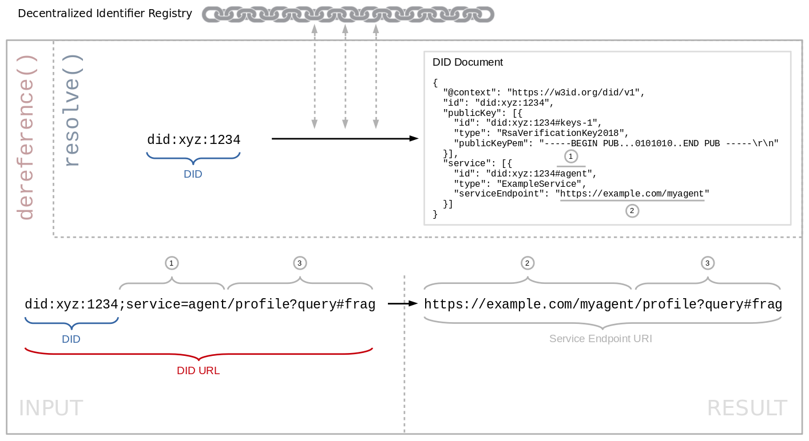

Decentralized Identifiers (DIDs) are a new type of identifier for
verifiable, "self-sovereign" digital identity. DIDs are fully under the
control of the DID subject, independent from any centralized registry,
identity provider, or certificate authority. DIDs resolve to DID
Documents — simple documents that describe how to use that specific DID.
This document specifies the algorithms and guidelines for resolving DIDs
and dereferencing DID URLs.
Portions of the work on this specification have been funded by the
United States Department of Homeland Security's Science and Technology
Directorate under contracts HSHQDC-17-C-00019. The content of this
specification does not necessarily reflect the position or the policy of
the U.S. Government and no official endorsement should be inferred.
Work on this specification has also been supported by the Rebooting the
Web of Trust community facilitated by Christopher Allen, Shannon
Appelcline, Kiara Robles, Brian Weller, Betty Dhamers, Kaliya Young, Kim
Hamilton Duffy, Manu Sporny, Drummond Reed, Joe Andrieu, and Heather
Vescent.
Introduction
DID resolution is the process of obtaining a DID document for a given DID. This is one
of four required operations that can be performed on any DID ("Read"; the other ones being "Create", "Update",
and "Deactivate"). The details of these operations differ depending on the DID method.
Building on top of DID resolution, DID URL dereferencing is the process of obtaining a resource
for a given DID URL. Software and/or hardware that is able to execute these processes is called
a DID resolver.
This
specification defines common
requirements, algorithms including their inputs and results, architectural options, and various considerations for the
DID resolution and DID URL dereferencing processes.
Note that while this specification defines some base-level functionality for DID resolution, the actual steps
required to communicate with a DID's Decentralized Identifier Registry are defined by the applicable
DID method specification.
The difference between "resolving" a DID and "dereferencing" a DID URL
is being thoroughly discussed by the community. E.g. see
this comment.
Terminology
Decentralized Identifier (DID)
As defined in [[DECENTRALIZED-IDENTIFIERS]].
Decentralized Identifier Registry (DIR)
As defined in [[DECENTRALIZED-IDENTIFIERS]].
DID document
As defined in [[DECENTRALIZED-IDENTIFIERS]].
DID fragment
As defined in [[DECENTRALIZED-IDENTIFIERS]].
DID method
As defined in [[DECENTRALIZED-IDENTIFIERS]].
DID path
As defined in [[DECENTRALIZED-IDENTIFIERS]].
DID query
As defined in [[DECENTRALIZED-IDENTIFIERS]].
DID resolution
An algorithm that takes a DID plus additional options as input and returns a DID document
or a DID resolution result as output. This algorithm relies on the "Read" operation of the applicable
DID method. See Section .
An algorithm that takes a DID URL plus additional options as input and returns a DID document,
a DID resolution result, or various other types of resources as output. This algorithm relies
on DID resolution. See Section .
Service Endpoint
As defined in [[DECENTRALIZED-IDENTIFIERS]].
DID Resolver Architectures
TODO: Describe how DID resolvers are implemented and used, describe the relevance
of DID methods.
Explain the difference between "method architectures" and "binding architectures".
Method Architectures
The DID resolution algorithm involves executing the Read
operation on a DID according to the DID's method (see ).
The mechanics of the "Read" operation can vary considerably between
DID methods.
... interaction with a remote network is required during execution of the "Read" operation.
... an actual DID document is stored in plain-text on a Decentralized Identifier Registry,
or that the DID document can simply be retrieved via a standard protocol such as HTTP(S).
While some DID methods may define their "Read" operation this way, others may
define more complex multi-step processes that involve on-the-fly construction of a "virtual" DID document.
The terms "local" and "remote" are not absolute categories when describing DID methods
and their implementations, but only an approximation with many possible variations.
TODO: Describe full nodes vs. light clients, blockchain explorer APIs, state proofs, etc.
TODO: Explain that even within a single DID method, different method architectures may be
possible. For example, the "btcr" DID method could be implemented with "local" access to a full node, or with
calls to a "remote" blockchain explorer API.
As an example, mention what it means to "resolve" peer/off-ledger/microledger/edgechain DIDs (e.g. see
here and
here).
As an example, mention what it means to "resolve" DIDs that are simply wrapped public keys (e.g. see
here and
here).
Those algorithms are implemented by DID resolvers. A DID resolver is used by an application or
service via a Binding. Bindings define how the abstract functions are realized using concrete
programming or communication interfaces. For example, Bindings could include SDK calls, APIs, command line
tools, or the HTTP(S) Binding.
A "local" binding for a DID resolver.
A "remote" binding for a DID resolver.
TODO: Describe "local" bindings vs. "remote" bindings, and implications for privacy, security and trust.
Also describe mitigations against potential downsides of "remote" bindings, e.g.:
A DID resolver's "remote" binding can use a trusted channel such as VPN or TLS with mutual authentication.
TODO: Explain that different parts of the DID URL dereferencing
function can be performed by different components of an architecture. E.g. if a DID URL contains a fragment
such as did:example:1234#keys-1, then a "remote" DID resolver could be
used to resolve a DID to its DID document, but the remaining steps of DID URL dereferencing (in this case,
processing of the fragment) would be done by a "local" DID resolver or a client.
Discuss what this means for certain bindings (such as ).
version-id
The version-id input option can be used to request a specific
version of a DID document.
This input option is OPTIONAL. It is mutually exclusive with .
See Section for additional considerations.
The possible values of this option are specific to the input DID method.
Possible values may include sequential numbers, random UUIDs, content hashes, etc.
version-time
The version-time input option can used to request a specific
version of a DID document.
This input option is OPTIONAL. It is mutually exclusive with .
See Section for additional considerations.
The value of this option MUST be a string value of an [[!RFC3339]] combined date and time string representing
the date and time the DID document was current for the input DID.
Help, what's the difference in ReSpec between a `[[RFC3339]]` and `[[!RFC3339]]` reference ?
no-cache
The no-cache input option can be used to
request a certain kind of caching behavior.
This input option is OPTIONAL.
Possible values of this option are:
`"false"` (default value): Caching of DID documents is allowed.
There is discussion how a DID that has been
deactivated should be treated during the DID resolution
process.
Specify how signatures/proofs on a DID document should be verified during the
DID resolution process.
Should we define functionality that enables discovery of the list of DID methods or other
capabilities that are supported by a DID resolver? Or is this implementation-specific and out-of-scope
for this spec? E.g. see here and
here.
The follow-redirect input option can be supplied by a client as a hint to
instruct whether redirects should be followed.
This input option is OPTIONAL.
See Section .
Algorithm
The following DID URL dereferencing algorithm MUST be implemented by a conformant DID resolver.
In accordance with [[RFC3986]], it consists of the following steps: Resolving the DID, dereferencing the primary
resource, and dereferencing the secondary resource (only if the input DID URL contains a DID fragment:
From the resolved DID document, select the
service endpoint whose id
property contains a fragment which matches the value of the service matrix parameter of the
input DID URL. This is called the input service endpoint.
The applicable DID Method MAY specify how to dereference
the input DID URL.
The client MAY be able to dereference the input DID URL
in an application-specific way.
If neither this algorithm, nor the applicable DID Method, nor the client
is able to dereference the input DID URL:
Return a null result.
Dereferencing the Secondary Resource
If the input DID URL contains a DID fragment,
then dereferencing of the secondary resource identified by the URL is dependent not on the URI scheme, but
on the media type ([[RFC2046]]) of the primary resource, i.e. on the result of
.
If the result of is a resolved DID document
with MIME type application/did+ld+json, and the input DID URL contains a
DID fragment:
did:example:1234#keys-1
From the resolved DID document, select the JSON-LD object whose id
property matches the input DID URL, e.g. a public key or service endpoint in the
DID document. This is called the output resource.
Selecting the JSON-LD object from the DID document MUST take into account relative IRIs and
the base IRI of the resolved DID document.
Return the output resource.
Mention relative IRIs and that the DID itself is considered the base IRI for
the JSON-LD parser. Mention potential attack vector if @base is injected into the
DID document.
Also see this discussion
on fully qualified DID URLs as the value of the id field.
This use of the DID fragment is consistent with the definition of the fragment identifier in
[[RFC3986]]. It identifies a secondary resource which is a subset of the primary resource
(the DID document).
This use of the DID fragment is furthermore consistent with the concept of Hash URIs
for the Semantic Web [[COOL-URIS]].
Perhaps we can find a good reference somewhere from RDF, JSON-LD or Solid specifications that defines
clearly the ability to use the fragment for identifying a specific resource in an RDF document.
This behavior of the DID fragment is analogous to the handling of a fragment in an HTTP URL in the
case when dereferencing it returns an HTTP 3xx (Redirection) response with a
Location header (see section 7.1.2 of [[RFC7231]].
Otherwise, dereference the secondary resource as defined by the media type ([[RFC2046]]) of the primary resource.
Additional Features
This section lists additional DID URL dereferencing features that are under discussion and
have not yet been incorporated into the algorithm.
Redirect
A service endpoint may have
a serviceEndpoint property with a value that is itself
a DID. This is interpreted as a "DID redirect" from the input DID to another. In this case, a "child"
DID resolution process can be launched to get to a "final" service endpoint.
See corresponding open issue.
DID redirects could not only apply to a single service endpoint, but
to an entire DID document, therefore enabling portability use cases.

Dereferencing a DID URL to a service endpoint URL.
Change the diagram and/or examples to make them consistent.
DID Resolution Result
This section defines a data structure that in some cases represents the result of the algorithms described
in and . A DID resolution result contains
a DID document or other result as well as metadata about the processes that produced the result.
See corresponding open issue.
Need to define how this data structure works exactly, and whether it always contains
a DID document or can also contain other results.
Block number, index, transaction hash, number of confirmations, etc. of a record in the blockchain or other Decentralized Identifier Registry.
Various URLs, IP addresses or other network information that was used during the DID resolution process.
For certain data, it may be debatable whether it should be part of the DID document
(i.e. data that describes the DID Subject), or whether it is metadata (i.e. data about the DID document or about
the DID resolution process). For example the URL of the "Continuation DID document" in the BTCR method.
We could potentially allow a query components on both the
input DID URL and input service endpoint URL, if they both contain lists of
key/value parameters that can be merged.
Details of the Service Endpoint Construction algorithm have been discussed in April 2019
on the CCG mailing list, e.g. here
or here.
Instead of defining our own algorithm, we could potentially re-use the "Relative Resolution"
algorithm defined in [[RFC3986]].
curl -X GET https://uniresolver.io/1.0/identifiers/did:sov:WRfXPg8dantKVubE3HX8pw
Errors
Do we need to define a list of error conditions, codes, etc.
Security and Privacy Considerations
Authentication/Authorization
DID resolution and DID URL dereferencing do not involve any authentication or authorization
functionality. Similar to DNS resolution, anybody can perform the process, without requiring any credentials
or non-public knowledge.
Explain that DIDs are not necessarily globally resolvable, such as pairwise or N-wise
"peer" DIDs.
See [[RFC3339]]:
URIs have a global scope and are interpreted consistently regardless of context, though the
result of that interpretation may be in relation to the end-user's context.
An advanced idea is that the result of DID resolution could be contextual or depend on policies,
see this comment.
A related topic is whether (parts of) DID document could be encrypted, e.g. see
w3c-ccg/did-spec/issues/172. Also see the use
of the fragment in the IPID DID method.
Caching behavior can be controlled by configuration of the DID resolver,
by the `no-cache` input option, or by contents of the DID document
(e.g. a `time-to-live` field), or by a combination of these options.
See corresponding open issue.
Perhaps we can re-use caching mechanisms of other protocols such as HTTP.
There is discussion on the relationship between DID resolution and
resolution of non-DID identifiers such as domain names, HTTP URIs, or e-mail addresses. This includes the
questions how DIDs can be discovered from non-DID identifiers, and how links between identifiers can
be verifiable.
DID method governance
Describe which methods a DID resolver should support, and potential implications.